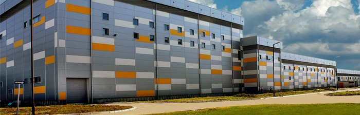
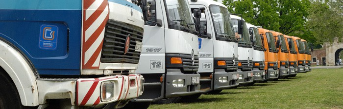

Beogradski vodovod i kanalizacija je javno komunalno preduzeće, koje je osnovao grad Beograd. Sedište preduzeća je u Ulici Kneza Miloša 27, a njegov skraćeni naziv je JKP “Beogradski vodovod i kanalizacija”. Odgovorno lice je direktor Dragan Đorđević, master ekonomista. Osnovna delatnost Preduzeća je zahvatanje i prečišćavanje sirove vode i transport i distribucija vode za piće korisnicima. Preduzeće se uporedo bavi prikupljanjem i odvođenjem gradskih otpadnih voda, kao i upravljanjem poslovima vezanim za snabdevanje vodom i kanalisanje.
Kontakt telefon: 011/2065 000
Faks: 011/3612 123
Web adresa: www.bvk.rs
E-mail: info@bvk.rs
Banca Intesa : 160-6789-79
UniCredit Bank Srbija a.d: 170-30019841000-41
OTP Banka Srbija a.d: 325-9500700032854-88
Matični broj: 07018762
PIB: 100346317
Vodovod
Beogradski vodovod godišnje proizvede preko 200 miliona kubnih metara vode u pet proizvodnih pogona: Makišu, Belim vodama, Banovom brdu, Bežaniji i Vinči. Na postrojenjima se prerađuje površinska sirova voda iz toka reke Save i podzemna voda iz njenog priobalja. Najmanje postrojenje Vinča prerađuje površinsku sirovu vodu iz Dunava. Beogradski vodovod je složen vodoprivredni sistem, koji kvalitetnom, zdravstveno ispravnom vodom za piće snabdeva oko dva miliona Beograđana, celokupnu privredu i komunalne sisteme grada. Pored pet proizvodnih pogona, vodovodni sistem, između ostalog, čine i 149 bunara, 34 rezervoara, 35 crpnih stanica i 3.599 kilometara distributivne mreže.
Kanalizacija

Beogradska kanalizacija obuhvata složen tehničko-tehnološki sistem koji se prostire na oko 180 kvadratnih kilometara površine grada. Bavi se prikupljanjem i odvođenjem atmosferskih i upotrebljenih voda, održavanjem kanalizacione mreže, nadzorom, upravljanjem i održavanjem elektromašinskih postrojenja i ekološkim monitoringom zaštite kanalizacionog sistema i recipijenta. Kanalizacioni sistem čine tri retenzije, 38 crpnih stanica, 2.420 kilometara cevne mreže i 32.892 slivnika.